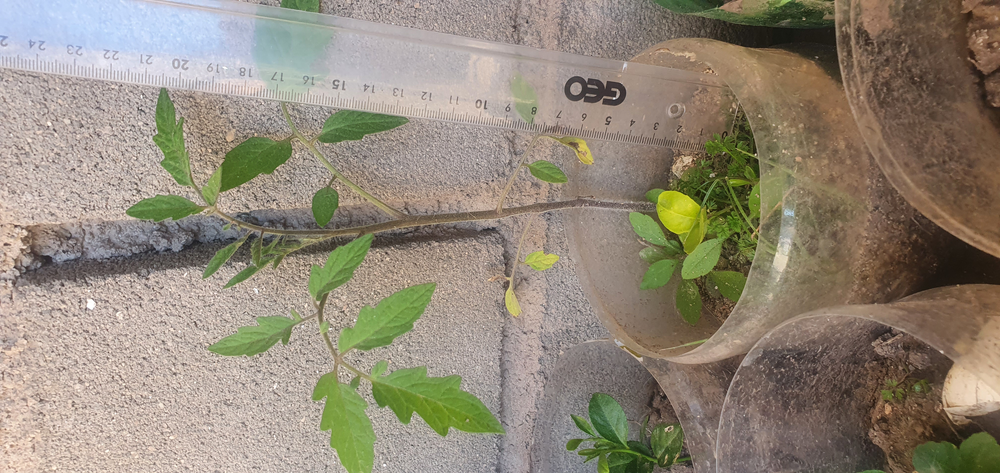
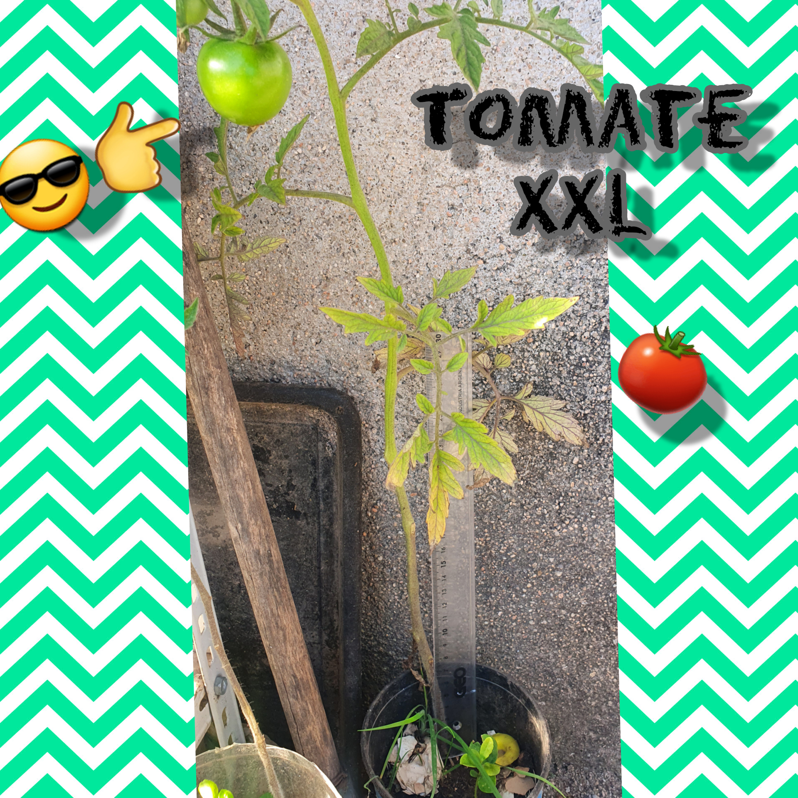

ADEMAS
EL TOMATE
El tomate (Solanum lycopersicum ) es una planta dicotiledónea perteneciente a la familia de las Solanáceas. ... Especie: Lycopersicum. Características morfológicas: El tomate es una planta perenne que se cultiva como anual, puede desarrollarse como planta erecta, rastrera o semirrecta.


LA MENTA
L. Mentha es un género de plantas herbáceas vivaces, perteneciente a la familia Lamiaceae (lamiáceas o labiadas). Se estima que cuenta con 13 a 18 especies, aunque la diferencia entre ellas es aún incierta. La hibridación entre algunas especies se da de forma natural, además de existir numerosos cultivares.
Género: Mentha; L.
Familia: Lamiaceae